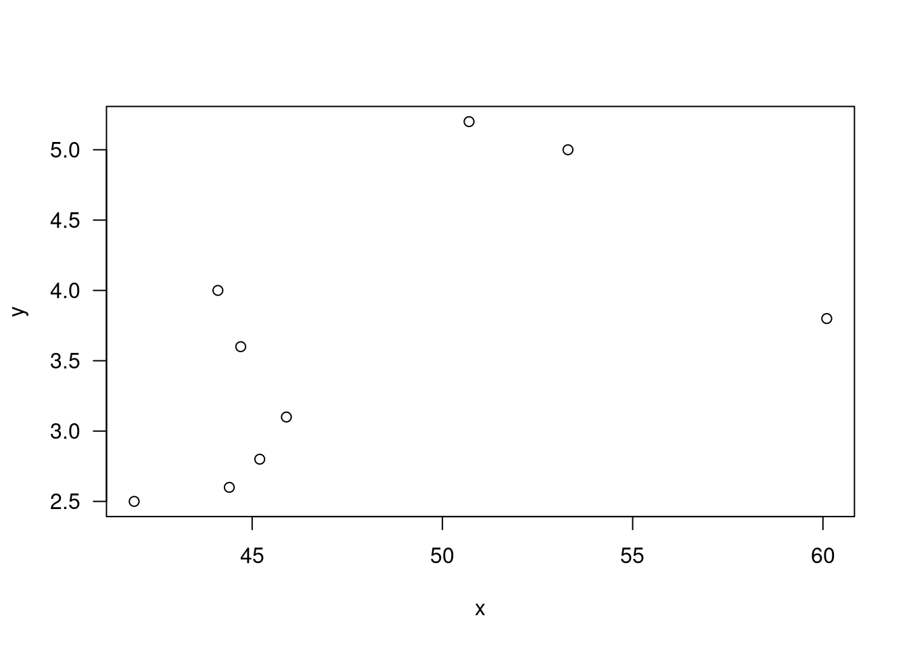
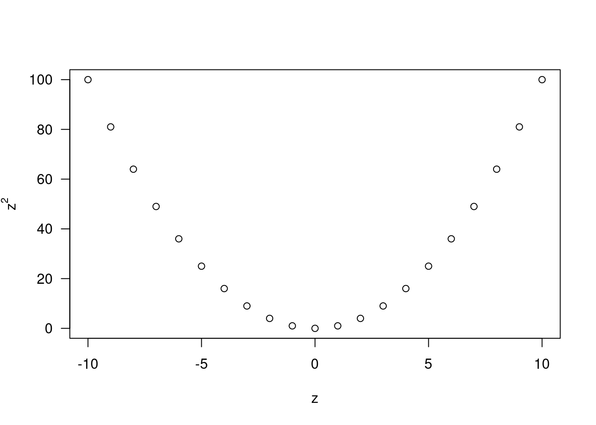

7 Correlation
7.0.1 Pearson
\[\begin{equation} \frac{\sum_{i=1}^n(X_i - \bar{X})(Y_i - \bar{Y})}{\sqrt(\sum_{i=1}^n(X_i - \bar{X})^2)\sum_{i=1}^n(Y_i - \bar{Y}^2)} \end{equation}\]
x=c(44.4,45.9, 41.9,53.3,44.7,44.1,50.7,45.2,60.1)
y=c(2.6,3.1,2.5, 5.0,3.6,4.0,5.2,2.8, 3.8);
plot(x,y,las=1)
n=length(x)
mx=mean(y); my=mean(y)
sum((x-mx)*(y-my))/(sd(x)*sd(y)*(n-1)); cov(x,y)/(sd(x)*sd(y))## [1] 0.5711816## [1] 0.5711816## [1] 0.5711816
## [1] 0.5711816
cor(x,y)## [1] 0.5711816## [1] 0.5711816
cor(x,y,method="pearson")## [1] 0.5711816cor.test(x,y,method="pearson",alternative="g")##
## Pearson's product-moment correlation
##
## data: x and y
## t = 1.8411, df = 7, p-value = 0.05409
## alternative hypothesis: true correlation is greater than 0
## 95 percent confidence interval:
## -0.02223023 1.00000000
## sample estimates:
## cor
## 0.5711816pr=cor(x,y); stat=pr*sqrt((n-2)/(1-pr^2))
c(stat , pt(stat,n-2,lower.tail=F) )## [1] 1.84108264 0.05408653z=(-10):10; cor(z,z^2)## [1] 0## [1] 0
plot(z,z^2,las=1,ylab=expression(z^2))
7.0.2 Kendall
\[\begin{equation} K = \sum_{i=1}^{n-1}\sum_{j=i+1}^{n}Q[(X_i, Y_i),(X_j,Y_j)] \end{equation}\]
cor(x,y,method="kendal")## [1] 0.4444444## [1] 0.4444444
cor.test(x,y,method = "kendall",alternative="g")##
## Kendall's rank correlation tau
##
## data: x and y
## T = 26, p-value = 0.05972
## alternative hypothesis: true tau is greater than 0
## sample estimates:
## tau
## 0.4444444n2=n*(n-1)/2; oy=outer(y,y,"-"); z=oy[lower.tri(oy)]
ox=outer(x,x,"-"); w=ox[lower.tri(ox)]
Tstat=sum(z*w>0); Tstat## [1] 26K=2*Tstat-n2 # K=T- [n(n-1)/2-T] ; K/n2
sdk=sqrt(2*n2*(2*n+5)/18); K/sdk## [1] 1.668115pnorm(K/sdk,lower.tail=F);## [1] 0.04764642## [1] 0.04764642
cor.test(x,y,method = "kendall",exact=F,alternative="g")##
## Kendall's rank correlation tau
##
## data: x and y
## z = 1.6681, p-value = 0.04765
## alternative hypothesis: true tau is greater than 0
## sample estimates:
## tau
## 0.44444447.0.3 Spearman Rank
$$\[\begin{equation} \end{equation}\]$$
rx=rank(x); ry=rank(y)
cor(x,y,method="spearman")## [1] 0.6cor(rx,ry)## [1] 0.6cor.test(x,y,method="spearman",alternative="g")##
## Spearman's rank correlation rho
##
## data: x and y
## S = 48, p-value = 0.0484
## alternative hypothesis: true rho is greater than 0
## sample estimates:
## rho
## 0.67.0.4 Cohen’s kappa
$$\[\begin{equation} \end{equation}\]$$
library(psych); n=100
data=cbind(c(0.75,0.05,0),c(0.01,0.04,0),
c(0.04,0.01,0.1))
cohen.kappa(x=data*n)## Call: cohen.kappa1(x = x, w = w, n.obs = n.obs, alpha = alpha, levels = levels)
##
## Cohen Kappa and Weighted Kappa correlation coefficients and confidence boundaries
## lower estimate upper
## unweighted kappa 0.50 0.68 0.85
## weighted kappa 0.76 0.76 0.76
##
## Number of subjects = 100